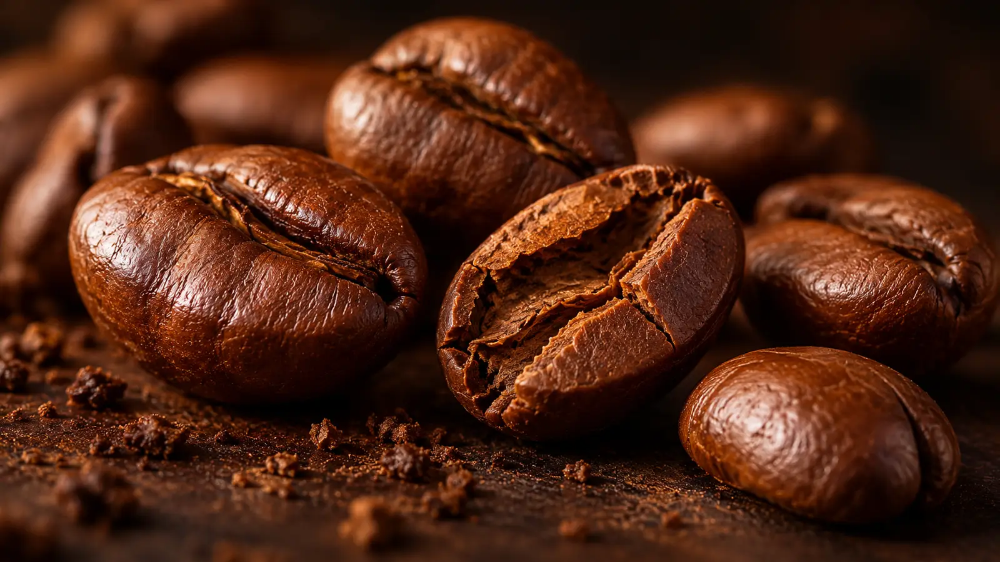
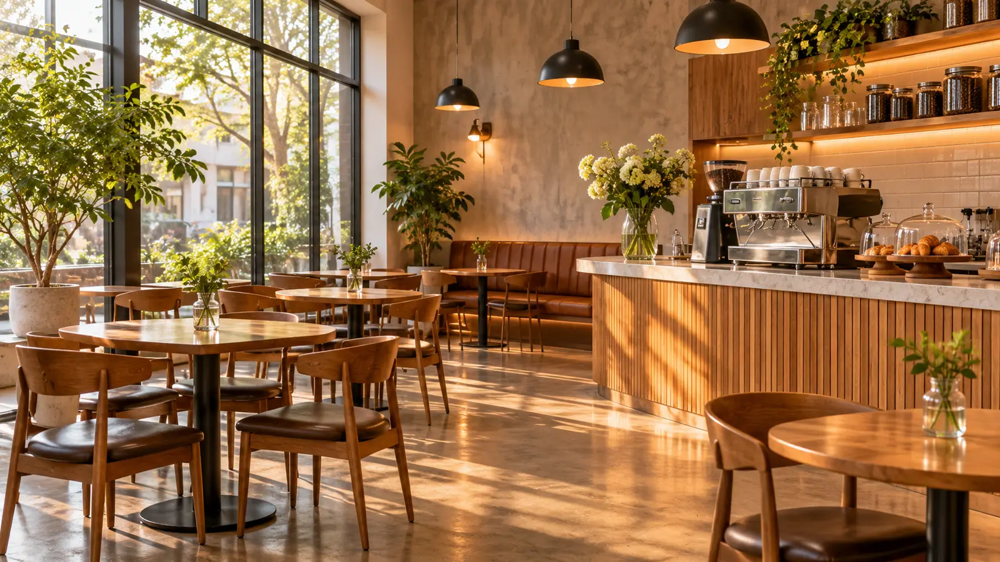
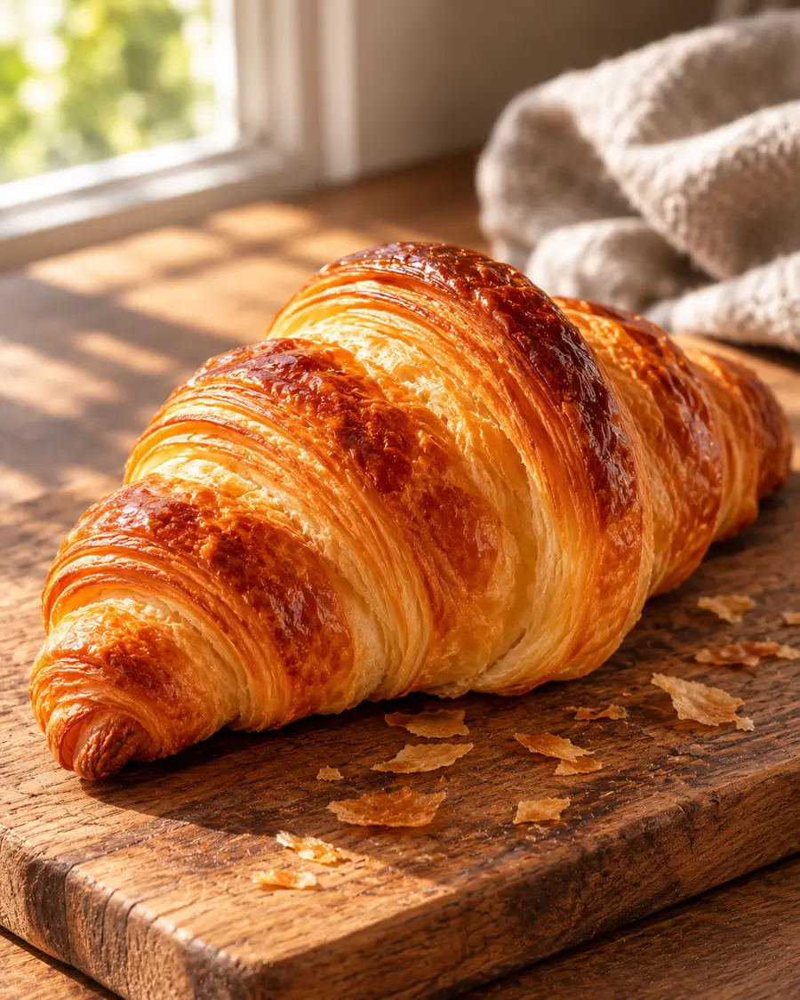
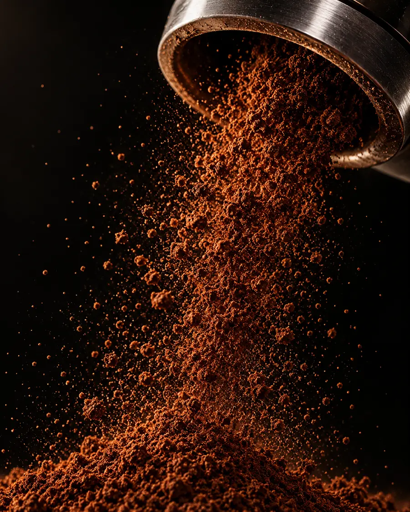

Moussemicro-bulles, 2 mm
Lait entiermonté à 65 °C
Espresso18 g pour 36 g, 27 s
Eaufiltrée, 93 °C
Mouturefine, à la minute
Grainarabica, torréfié ici
Torréfacteur & café de quartier · exemple
Maison Origine
Faites défiler, doucement.
01 — Le grain
Tout commencepar un grain.
Moulu à la minute, il éclate en poudre.
02 — L'extraction
L'eau la traverseen 27 secondes.
À 93 °C, ni plus ni moins.
03 — L'espresso
Deux filets,une crème noisette.
04 — Le lait
Monté à 65 °C,jamais plus.
Au-delà, il perd sa douceur.
05 — Le dessin
Tracé à main levée,jamais deux fois pareil.
06 — Dans votre tasse
Six couches,rien de caché.
07 — Le four
Et chaque matin,le beurre.
Viennoiseries cuites sur place dès 6 h.
08 — Le lieu
Un endroitoù s'asseoir.
12 rue des Torréfacteurs, Orléans (exemple).
Notre histoire
Un petit torréfacteurde quartier.
Maison Origine est née d'une idée simple : servir un café dont on connaît l'histoire. Nous travaillons directement avec quelques petits producteurs, et nous torréfions en petites séries pour garder le goût du grain.
Ici, rien n'est pressé. Du grain à la tasse, chaque étape est faite avec soin, par des gens qui aiment ce qu'ils servent.
- 3origines suivies
- 7 jentre torréfaction et tasse
- 100 %arabica
Texte et chiffres d'exemple (maquette).
La carte
Boissonset douceurs.
Prix « exemple », non contractuels. Ingrédients indiqués sous chaque nom.
Boissons végétales sur demande (+0,40 €, exemple). Allergènes : lait, gluten, œufs, fruits à coque.
Galerie
Le lieu, la tasse,le four.


Venir nous voir
Adresseet horaires.
12 rue des Torréfacteurs
45000 Orléans (adresse d'exemple)
- Lundi – vendredi
- 7 h 30 – 18 h
- Samedi
- 8 h 30 – 19 h
- Dimanche
- 9 h – 14 h
Horaires d'exemple. Accès de plain-pied, terrasse aux beaux jours.
Contact
Un motpour nous ?
Privatisation, groupes, ou simple question sur un grain : écrivez-nous, on répond dans la journée.